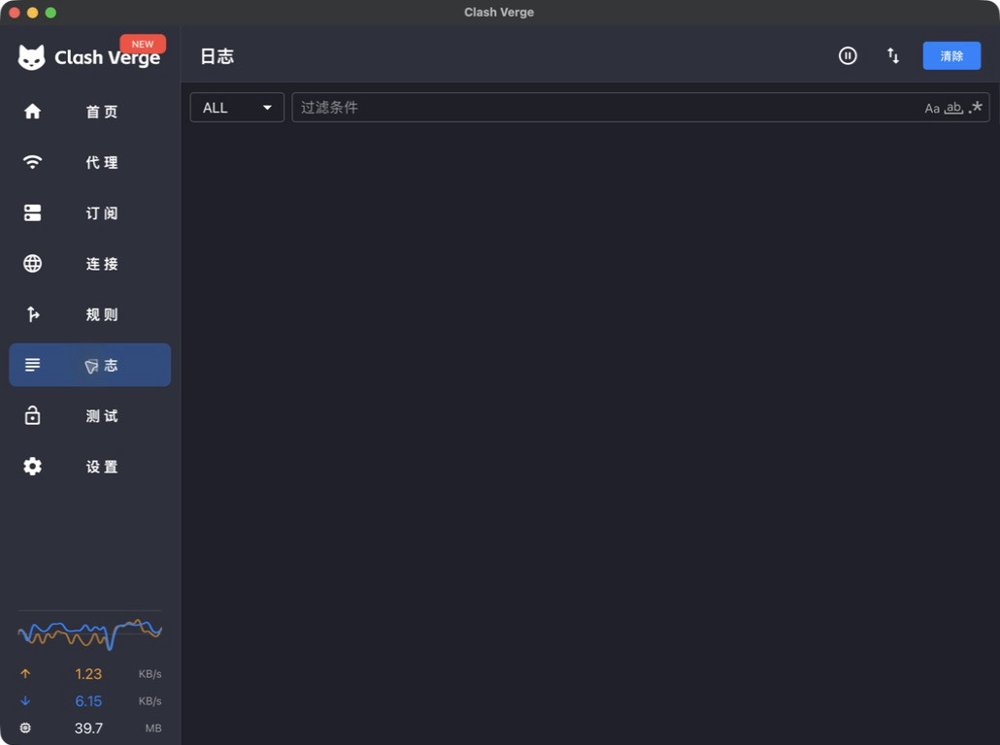
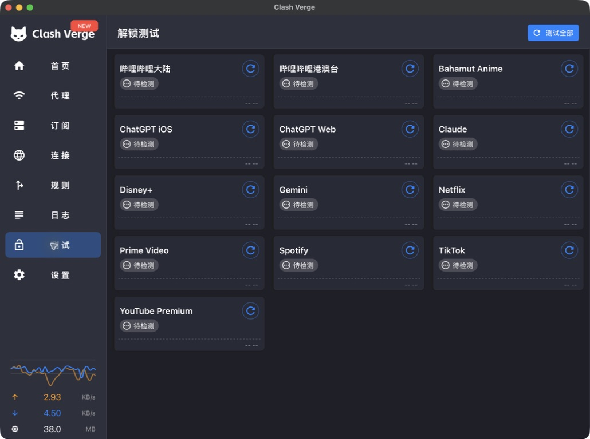
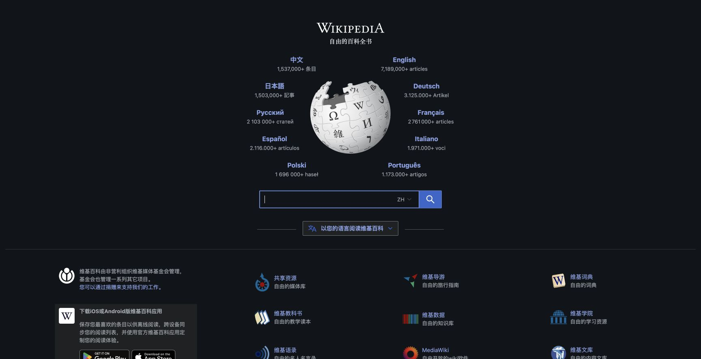

代理
查看规则、全局、直连等模式，以及当前代理组和节点。
用代理组、连接记录、规则和日志，判断当前网络流量怎样被处理。教程基于本机 Clash Verge 2.4.7 的现场只读观察，连接明细已遮盖。
查看规则、全局、直连等模式，以及当前代理组和节点。
查看活跃连接、目标主机、链路、规则命中和进程。
查看规则条目如何把流量归到代理组或其他处理路径。
按级别或文字过滤运行记录，追查连接处理结果。
按服务检查连通性；测试可能产生真实请求，本次只记录入口。
现场看到左侧导航包含首页、代理、订阅、连接、规则、日志、测试和设置，底部显示上传、下载速度及内核占用。
当前页面显示“规则”处于选中状态，PROXY 组当前选择 DMIT-PH-Smart。这个界面状态说明存在一条选择结果，不能单凭它推断所有流量都已成功连通。

连接页提供活跃/已关闭筛选、过滤条件和列设置。现场能看到主机、链路、规则、进程等栏目；详细地址和主机明细已从截图中遮盖。

日志页提供暂停、按时间倒序、清除、级别筛选和文字过滤。现场展开菜单确认了 ALL、DEBUG、INFO、WARN、ERROR 五项；没有清除日志。


现场看到规则条目、过滤条件和 PROXY 处理结果，适合回答“某类流量被分到哪里”。

现场看到“测试全部”和多个服务测试入口，状态均为待检测；本次没有启动。
规则命中和测试结果会随配置、时间、网络及服务状态变化；本页只记录现场入口和可观察状态。
第二条回归使用公开的 Wikipedia 首页。Chrome 分支取得了 URL、标题、语言入口、搜索框和 ARIA 角色等结构证据，没有输入或提交内容。

截图文件位于同目录 assets/。连接页和日志页的主要明细已遮盖；教程中的数值、节点名和状态只代表本次观察，不代表永久配置。任何改变代理路线、订阅或持久设置的操作都需要另行确认。